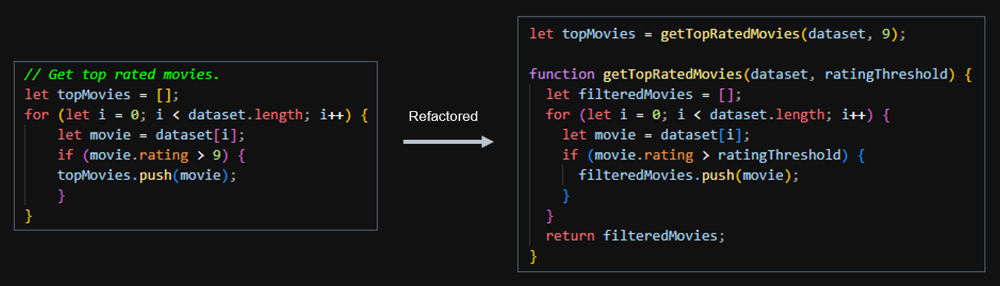

Functions
This applies mostly to programming languages like Python or R. Not all of this is applicable for queries using SQL.
- Code should follow a modular structure, and break large chunks of code into smaller self-contained and
understandable logical components (functions)
- Makes code easy to understand, and reuse. It also makes it easier to modify or extend the code as there are separate functions
- Functions should be concise
- Frequently duplicated code should go into a function to be reused
- A function should have a clear purpose and not do more than one task
- A function should do what it says it will do and not anything else
- Break up the function into smaller functions if needed
- Ex. A function that loads data should just load data and not filter or select columns as well
- Number of parameters to a function should be as few as possible
- The more input parameters to a function, the harder it is to remember the order to pass arguments in when calling the function. You must look up the function definition which is an unnecessary distraction and breaks your flow
- It also makes the function harder to read and probably means the function is doing more than one task
- If you have multiple arguments, you can pass them as one object by using a dictionary or use default values
- Reusable functions that are shared by multiple developers should go into a separate file/folder inside the
project folder
- Ex. Creating a "utils" folder
- Use abstraction to hide implementation details and show a high-level view to the reader. If someone wants to
get more details, they can dive deeper into the functions
 - Organize your functions to have a natural flow. Functions that go together should be close to each other
- Sort functions in the order in which they are called
- This can make the code easier to read and follow